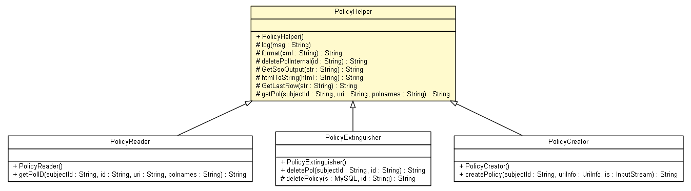

org.opentox.pol.xml
Class PolicyHelper

java.lang.Object
 org.opentox.pol.xml.PolicyHelper
org.opentox.pol.xml.PolicyHelper
- Direct Known Subclasses:
- PolicyCreator, PolicyExtinguisher, PolicyReader
public class PolicyHelper
- extends Object
| Methods inherited from class java.lang.Object |
clone, equals, finalize, getClass, hashCode, notify, notifyAll, toString, wait, wait, wait |
PolicyHelper
public PolicyHelper()
log
protected void log(String msg)
format
protected String format(String xml)
throws nu.xom.ParsingException,
IOException
- Throws:
nu.xom.ParsingException
IOException
deletePolInternal
protected String deletePolInternal(String id)
throws RestException
- Delete a Pol resource internally
- Parameters:
id -
- Throws:
RestException
GetSsoOutput
protected final String GetSsoOutput(String str)
throws IOException
- Throws:
IOException
htmlToString
protected String htmlToString(String html)
GetLastRow
protected final String GetLastRow(String str)
- Returns last row after removing whitespaces from the end.
getPol
protected String getPol(String subjectId,
String uri,
String polnames)
throws RestException,
DbException
- Get policy
- Parameters:
subjectId - uri - polnames -
- Returns:
-
- Throws:
RestException
DbException
Copyright © 2010-2011 OpenTox project. All Rights Reserved.